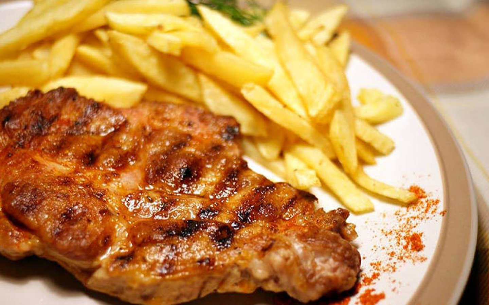

Friptura

Iti este pofta de o ceafa la gratar cu niste muraturi
Mancare rapida si gustoasa
Ingrediente
- 2 felii de ceafa de porc
- condimente
- vin rosu
- 4 cartofi medii
Pasi
- Clatim carnea cu apa ,o lasam putin sa se usuce,dupa care adaugam condimente(piper,vegeta,cimbru,boia dulce)
si o punem in tigaie stropita cu ulei de masline si o acoperim cu apa sa se inmoaie.
- Cand apa scade mai adaugam odata apa,dupa care se lasa sa se prajeasca,adaugam vin rosu .
- In ceaun punem cartofii la prajit.Cand sunt gata ,scoatem si carnea si le servim